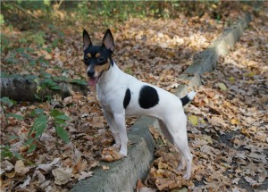
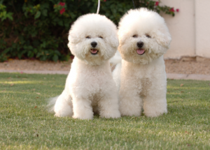
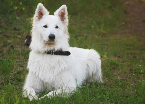

Характерні звичаї і властиві риси представників американського той-тер’єра відмінно підійдуть для тих
хто хоче придбати кудлатого домашнього улюбленця. Собаки невибагливі до умов, відрізняються гарним інтелектом і кмітливістю,
спритно і швидко навчаються всьому, чого намагаються навчити їх власники.
Що стосується ставлення поза-домашнього кола, необхідно бути обережними,
тому що чужинців амертой не приймають і агресивно налаштовуються проти незнайомців.
Коли виникає необхідність захищати володіння, вихованці виявляються недоброзичливість і агресію, що не властиво їм в колі «своїх».

У представників бішон-фрізе веселий і миролюбний характерний вдачу.
Крім того, для своїх власників собачки завжди віддані, вірні, відрізняються відвагою.
Вихованці володіють високими інтелектуальними даними, тому з легкістю вивчають і виконуються навіть найскладніші команди.
Під час дресирування собаки проявляють свою старанність і цілеспрямованість.
Не дарма, саме собачок бішон-фрізе навчають для професійних виступів на циркових аренах, де вони демонструють трюки вищого рівня.

Характерні звичаї, що притаманні представленному різновидиу, виділяються сміливістю, відвагою,
вони дуже рішучі і заздалегідь обмірковують всі дії. При правильному вихованні, собачки слухняні, старанні
і діють за командами. До знайомих людей ставляться доброзичливо і стримано,
але при зустрічі з незнайомцем – проявляють агресію. Оскільки на генетичному рівні собакам притаманні задатки сторожа і хижака,
вихованці відмінно виконують свої обов’язки, захищаючи не тільки власників, але і всі володіння.
При екстрених ситуаціях, діють миттєво і завжди віддано захищають господарів від небезпеки, навіть якщо мова йде про ціну власного життя.